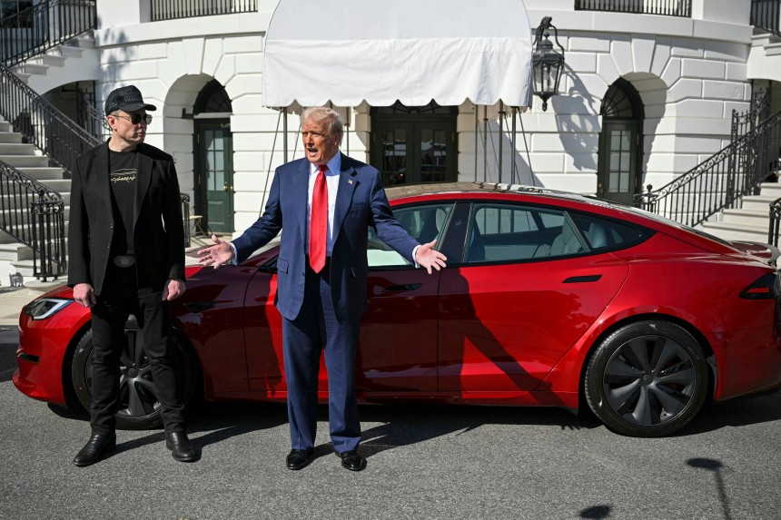

도널드 트럼프 미국 대통령이 11일 워싱턴 DC 백악관 잔디밭에서 개인 비용으로 새로 구매한 빨간색 테슬라 ‘모델 S’ 운전석에 앉으며 “와우, 정말 아름답다”고 말했다. 일론 머스크 테슬라 CEO는 트럼프가 모델 S에 시승할 때 조수석에 함께 앉아 차량 시동법 등을 트럼프에게 설명했다.
트럼프는 전날 소셜미디어를 통해 “내일 아침 머스크에 대한 지지를 확인시켜 주기 위해 새 테슬라 차량 한 대를 구매하겠다”고 밝혔는데, 이날 이를 실행에 옮긴 것이다. 최근 미 전역에서는 ‘트럼프 2기’ 정부효율부(DOGE) 수장을 맡아 연방 공무원 대량 해고를 급진적으로 밀어 붙이고 있는 머스크에 대한 반감이 확산되고 있다. 테슬라 매장마다 테슬라 불매 시위가 벌어지고 테슬라 차량과 충전소 등에 대한 총격·방화 사태가 이어지는 등 증오 범죄 양상이 나타나고 있다.
트럼프는 이날 백악관 취재진들에게 자신이 새로 구매한 테슬라 모델 S를 선보인 뒤 “약 8만달러(약 1억 1600만원)에 판매되는 이 차량을 수표로 구매했다”며 “백악관에 두고 직원들이 사용할 수 있도록 할 것”이라고 했다. 그러면서 “내 구매가 판매 부진과 주가 하락에 시달리는 테슬라를 부양하는 데 도움이 되길 바란다”고 했다. 미 전역의 반(反) 머스크 정서로 최근 테슬라 주가는 연일 하락하고 있으며, 작년 11월 대선 이후 사상 최고치를 기록했던 테슬라 주가는 그간 상승분을 모두 반납했다.
Visit 뉴스 주소